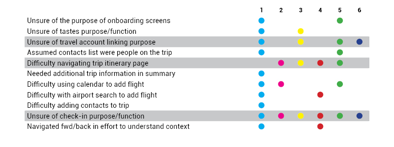
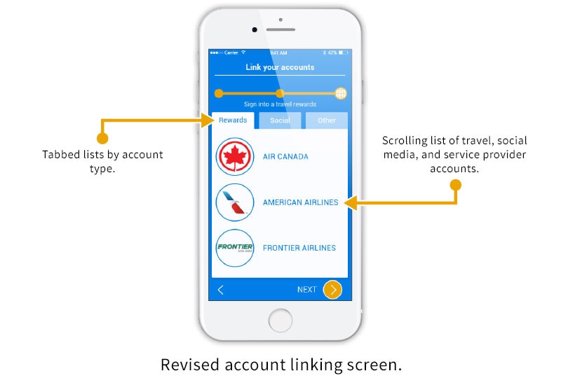
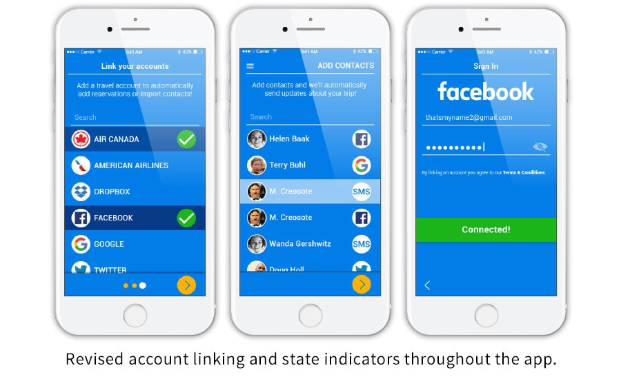

A client seeking to capitalize on emerging opportunities within the travel industry anticipated a shift in how people plan and share their travels. In particular, they hoped to gain a foothold within a specific segment of travel, transit and documents. Essentially, they needed an innovative solution to address the when, where, and how travelers reach their destinations.
The target demographic, so-called “Adventurers”, consisted of individuals between 20 and 40 years of age, occasional group travellers, single or newly married with no children and limited disposable income.
Providing a viable solution required an appreciation for what travelers needed while managing their reservations, etc. My path toward delivering a working prototype would follow a series of user interviews, market research, and extensive usability testing with wireframes and high fidelity mock-ups.
Making a feasible prototype meant it was necessary to survey my competitors and see how they measured up. From the ten travel related apps I reviewed, only TripIt, Planchat, and Tripcase seemed direct competitors. I then summarized their collective features and failures:
Interviewees were asked about a multitude of travel related topics such as their typical routine when planning trips, past experiences, and, of course, how they coordinate with others. Although interviewees’ responses were quite diverse, some shared strong sentiments concerning their expectations of travel apps and services:
Once all the interviews were concluded I compiled responses and, through affinity mapping, tried to unearth commonalities.

Amidst diverse thoughts and opinions, a few topics came up time and time again:
Before I began work on user flows and wireframes I needed direction on how to address users’ concerns, thoughts, and frustrations. So, I conjured up a persona – meet Mary…
Since she tends to take the lead on trips, it’s up to Mary to organize stays in hotels, activities, etc., and simultaneously update friends and family. She knows how to use a combination of apps and services to help her manage things but she’d much rather rely on just one.
With the aid of a journey map I expanded on Mary’s story and worked to illustrate how users might engage with my app. After a few revisions I had my final version depicting the flow from discovery and trip planning to document sharing and post trip follow-up.
With the initial user research complete, I set upon developing the sitemap. This map, of course, was documentation of the major touchpoints throughout the app. In effect, it was a screen inventory for the wireframes and mock-ups that would come later.
As depicted in the image above, the app is basically split into two functions: trip management and itinerary building.
Next was the user flow. The first draft of which included a profile builder to generate recommendations for activities, dining, etc. I imagined the best place to nudging users towards adding recommended points of interest to their itinerary was while they were managing it.
My first wireframes were simple sketches - quick ideas on layout and components within the app. As I put together each sketch I tried to keep in mind that access to and sharing of trip information were top priorities.
I then created several iterations of key flow screens and tried present only the most relevant information. The current trip (home) screen in particular went through several revisions as I worked to best structure information.
Six people were asked to complete a series of tasks using the prototype. As I recorded and compiled each of the participants’ attempts I discovered a few things about their interactions. Many users ran into problems with account registration and basic navigation. Perhaps most troubling was more than half had difficulty navigating the trip itinerary page.
Using what I learned from the first round of testing, I revised the user flow. At this point I began to doubt the utility of a profile builder within an app for sharing travel documents. So, my final user flow emphasized the trip building and social functions at the core of the app’s allure – sharing trips with those who matter most.
When it came time to create mock ups for the app, which I dubbed Viaggio (Italian for travel or journey), I knew I had to maintain a minimalist aesthetic that didn’t overload trip information. I wanted Viaggio to focuse on its main purpose demonstrated during onboarding...
Furthermore, I had to the address a major problem revealed during wireframe testing: itinerary navigation and the first element I trimmed from this section was the trip detail drawer. Initially, I thought the use of expanding drawers to reveal trip information was an easy way to implement progressive disclosure (an aspect of user control) and reduce unnecessary clutter.
Clearly, these drawers didn't make browsing the itinerary any easier and I eventually abandoned the concept in favor of concise information coupled with clear calls to action:
Akin to my competitors, I also added a timeline element to subtly hint at off-screen content and visually bind each leg to the trip.
I also had to fix the account linking problem. At first, I assumed a simple list and some instructional text would suffice to explain to users they can do things like import contacts or reservations. However, given the confusion users expressed I thought perhaps for the next version grouping the different types of accounts available might help.
As I continued rework, I tried to trade off my more complicated designs for ones that fit within a flat design aesthetic.

Once again I rounded up a few volunteers to act as users and test my prototype. Although the tested version was limited to a few key flows users generally responded positively and successfully completed tasks.
Some comments, however, did note areas to improve. For instance, several indicated they had trouble distinguishing buttons from static design elements. Others were curious about the document sharing capability and had expected to see things like boarding passes or reservation screens.
My subsequent designs not only expanded to show Viaggio’s document sharing features but also indicate screen state information. Through the conjunction of simple visual cues and direct language I’d hoped to ease confusion and provide instant visual feedback to the user throughout each step.
A/B testing of itinerary summary, trip detail screens, contact profiles, and menu.
Please feel free to take the Viaggio prototype for a test run at InVision.